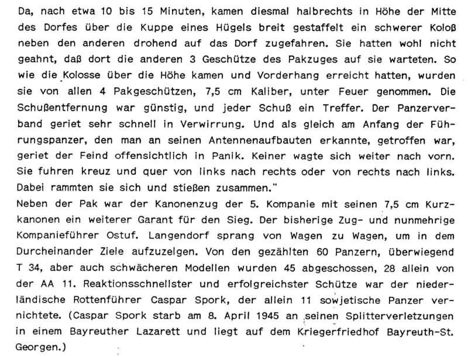

Воспоминания с российской стороны
Из воспоминаний В.А. Григорьева:
"... Утро того памятного дня 26 января 1944года начиналось солнечным рассветом, легким морозом и ... тишиной. Вслушиваясь в эту тишину, трудно было представить, что совсем рядом проходит линия фронта. Но измученные и уставшие жители Волосово и окрестных оккупированных деревень понимали, что тишина эта обманчива. Люди знали, что советскими войсками уже ведется наступление по всем направлениям. Всем было ясно, что день освобождения уже близок. Наступления этого дня люди ждали и в то же время боялись. Ведь пушечные и танковые снаряды не разбирают, где свой, а где чужой , в любом бою бывает много жертв.
Обманчивая тишина была нарушена гулом двигателей летящего самолета. Спустя мгновение воздух разорвали характерные выстрелы зенитной установки. Одна из трассирующих пуль спичкой чиркнула по кривой плоскости двухмоторного самолета, пламя заиграло на его крыле и скоротечный воздушный бой, не успев начаться, был закончен. Самолет сделал крутой разворот и, оставляя за собой длинный дымный след, скрылся за лесом. Раздался взрыв, а затем снова - глубокая тишина.
Но эта тишина продолжалась недолго. Со стороны деревни Торосово послышался рокот моторов, сначала еле слышный, а затем всё более громкий и грозный. Танки! Сомнений уже не было, в бой шли танки. Это подходила танковая бригада под командованием В. Хрустицкого. Перед бригадой была поставлена задача: освободить Волосово.
В морозном утреннем воздухе были издалека слышны звуки двигающихся, маневрирующих танков. В какой-то момент рокот моторов ослаб, стал еле слышен. Это означало, что танки вышли на рубеж атаки в д. Торосово и, маскируясь за домами и в старом парке, остановились. Вскоре несколько танков отделились от основного состава и по лесным дорогам начали продвигаться в сторону д. Череповицы, на запад от деревни Торосово. Это была разведрота под командованием старшего лейтенанта Сабинина.
Жители окрестных деревень спасались от возможных боёв в лесу недалеко от д. Висс, Высокие Череповицы и хутора Ян-Креус. В то время там рос еловый лес из старых очень толстых и высоких елей, под которыми не было снега, было сухо и даже уютно. Вся земля под елями была покрыта опавшей хвоей. Танки разведки двигались по лесной дороге, проходящей стороной от этой рощи, метрах в ста от неё.
Передовой танк выдвинулся из леса, и, словно диковинный зверь, начал обнюхивать поляну, поворачивая орудийную башню. Затем танк выпустил длинную очередь из пулемета, и пули защелкали по лесу, сбивая снег с веток. Через какое-то мгновение танк увеличил скорость и двинулся по дороге вдоль леса, а за ним второй, третий ... из леса выползла целая колонна танков, наполняя его грохотом и лязгом, движущихся машин. Красивое зрелище, если бы не страх нового боя, новых жертв, новых потерь близких. Затаившиеся в лесу люди с тревогой наблюдали за маневрами танков разведроты, перед которой Хрустицкий поставил задачу: нанести удар по Волосово с запада. А сам комбриг с основными силами должен был наступать восточнее, через деревню Малые Губаницы. Задачей основных сил 30-й танковой бригады было уничтожение группировки противника, дислоцирующейся в Волосово, отрезав пути выхода противника на направление Волосово-Гатчина.
Замысел комбрига состоял в следующем: взять Волосово в танковые "клещи", нанося удар ротой Сабинина с запада, а основными силами ударить по восточной, более укрепленной, окраине поселка, перерезая пути отступления и продвижения к Ленинграду. Все пути были проходимы для танков, учитывая неглубокий снежный покров в конце января 1944года.
Казалось, замысел комбрига хорош во всех отношениях, но, если бы кто-нибудь тогда знал, что немцы готовят ловушку для наступающих советских войск. Неслучайно гитлеровцы позаботились о двойном рубеже укрепления своих позиций. Передовой рубеж находился в д.Губаницы, командный и наблюдательный пункты находились в губаницкой лютеранской церкви. Основной рубеж укрепления и защиты немецких сил состоял из трех узлов сопротивления, иначе называемых дзотами, расположенных на северо-востоке. Каждый дзот был рассчитан на стрелковое подразделение. Немцы отлично понимали, что губаницкие поля танкоопасны и прикрыли это направление полубатареей, состоящей из двух универсальных по тем временам орудий, так называемых, гаубиц-пушек.
Орудийные позиции располагались к северу от дороги Волосово-Кикерино, на поле, в то время заросшем молодой ольхой. Орудия были установлены по всем правилам военной науки: в укрытиях, сверху замаскированы сетками. Место для их установки было выбрано идеально: орудия могли держать под обстрелом все окрестности Волосово и Кикерино. Дороги, ведущие к Волосово, были расчищены от кустов для удобства наблюдения и обстрела. Все подходы к Волосово были тщательно заминированы. Вот с такой системой обороны пришлось столкнуться бригаде Хрустицкого.
Основные силы бригады около полудня выдвинулись из Торосово и, прижимаясь к лесу, окаймлявшему поле с востока, двинулись в сторону д. М.Губаницы.
Немецкий наблюдатель, сидевший на колокольне губаницкой церкви, подпустил танки к полям у д. Губаницы и дал команду орудиям: открыть огонь на поражение. Завязался бой. Танки, натужно завывая моторами, двигались по полю боя на максимальной скорости, а их хладнокровно расстреливали немецкие орудийные расчеты, руководимые корректировщиком с колокольни. Другого пути к Волосово не было. Основные силы бригады отвлекали внимание немцев на себя, давая возможность разведроте незамеченной зайти с запада.
Находясь на марше, к Волосово комбриг В.Хрустицкий узнал о том, что ему присвоено звание генерал-майора, но в сумятице боя он погиб, сгорев заживо в танке со всем экипажем. Оставшиеся в живых рассказывали о том, что, отступив к д.Торосово и укрывшись за постройками деревни, танкистам несколькими точными выстрелами из орудий удалось сбить колокольню на Губаницкой лютеранской церкви, где находился корректировщик немецких войск.
Разведрота через Череповицы и Соколовку вышли на дорогу Волосово-Терпилицы. На этом участке обороны они разгромили и уничтожили немецкий обоз и, заняв железнодорожный переезд, вступили в короткий бой с фашистами.
Запланированной встречи с основными силами бригады не получилось, но задача, поставленная перед бригадой, была выполнена: населенный пункт Волосово был освобожден советскими войсками от немецких захватчиков 26 января 1944года. Жители окрестных деревень, прятавшиеся в лесу, наконец-то вернулись в свои дома. Танкисты разведроты решили заночевать на хуторе Ян - Креус, а утром продолжить путь. "
Из книги Ф.К.Румянцева "Огнем и тараном", комиссара 30-й отдельной Выборгской танковой бригады.
"...-Связь с комбригом Хрустицким потеряна уже три часа.
Попытки отыскать комбрига пока что безуспешны.
Ничего не знал о комбриге и начальник разведки. Раненые, укрывшиеся за домом, утверждали, что танк № 400 сгорел.
"Хрустицкий... Хрустицкий... надо его найти. Надо его найти". Эта мысль не давала покоя. На дымящееся в ночи, еще простреливаемое со всех сторон поле боя отправился на поиски комбрига начальник инженерной службы майор Михеев с группой саперов и разведчиков. И снова безрезультатно.
Война есть война... Горю предаваться некогда. Надо действовать, выполнять боевой приказ. Попытаемся отыскать комбрига завтра при свете дня.
Как только мы взяли Волосово, майор Михеев и начальник разведки Мельников снова направились в район д. Губаницы. На вчерашнем поле боя чернели изуродованные огнем машины. Танкисты подошли к "Т-34", от которого не осталось почти ничего, кроме обгоревшего остова. Ломиком вскрыли люк - и отшатнулись. В башне они увидели обугленное тело комбрига...
Вскоре выяснились подробности гибели Хрустицкого. Когда головная часть колонны устремилась к Волосово, бригада встретила яростное сопротивление противника. Сначала комбриг решил рассредоточить машины и образовать вокруг деревни кольцо. Но две роты танковых расчетов во главе с танком комбрига вынуждены были отбивать контратаки гитлеровцев, в несколько раз превосходивших их по численности. Как рассказывают очевидцы этого боя, против танка Хрустицкого гитлеровцы стали разворачивать целую противотанковую батарею. Как будто знали, что именно там комбриг.
Теперь все решали секунды. Танк Хрустицкого первым ринулся на вражескую пушку и раздавил ее вместе с расчетом. За комбригом ринулся танк старшего лейтенанта Лосева. Через несколько секунд его подбили. Машина вспыхнула и сгорела со всем экипажем. Танковые дуэли гремели, не прекращаясь... Ранило в голову капитана Метельского, его под огнем утащили в укрытие. Вместо него командование танком принял капитан Евтушенко.
Танк Хрустицкого продолжал уничтожать одно вражеское орудие за другим. Внезапно отказал поврежденный снарядом двигатель. Еще удар, и машина загорелась. А потом взрыв за взрывом,- в машине стали рваться боеприпасы. Машину охватило пламя...
Павшие в этом бою навсегда остались в Губаницкой земле, сам комбриг был похоронен в Парголове.
......
В результате боев за освобождение Волосово в 30-й танковой бригаде из 43 танков уцелели всего 16. Из личного состава в строю осталось всего 40 человек. Но были захвачены около 300 пленных гитлеровских солдат, 18 немецких офицеров, в том числе 2 подполковника. За проявленное мужество и героизм многие солдаты и офицеры 30-й танковой бригады получили правительственные награды. В.В.Хрустицкому посмертно было присвоено звание Героя Советского Союза...
Все это было утром 27 января 1944 года, а вечером Москва салютовала войскам Ленинградского фронта, снявшим блокаду. Ленинградцы вышли на улицы и набережные своего города. Люди плакали и целовались, поздравляли друг друга с великой радостью. Да и как было не радоваться. Салют над Невой возвещал конец долгой блокадной ночи."
С сайта http://vss1-school.narod.ru/.
Воспоминания Галины Александровны Смирновой
Будучи школьницей, проводила летние каникулы в Губаницах, начиная с 1948 года.
Вопрос: В мемуарах встречается упоминание о подбитом танке, который еще долго после войны стоял за старым Губаницким кладбищем, вы видели его?
Ответ: В Губаницах нет старого кладбища, там одно кладбище. Ни какого танка я не видела.
Вопрос: Пишут, что немцы там создали эшелонированную оборону с ДЗОТами и траншеями. В 1948 году неминуемо должны были оставаться следы укреплений. Как это выглядело после войны?
Ответ: Не было в Губаницах места, которого бы я не знала. Ни каких следов траншей, тем более земляных или бетонных укреплений не помню.
Вопрос: Оставалась ли какая-либо техника, времен войны?
Ответ: Ничего, чтобы напоминало о войне. Кроме братской могилы.
Земляники было много. Куда ни встанешь, под ногами красное. Не на поле, на просеках.
Воспоминания с немецкой стороны
В сером цвете утра русские танки вырываются широким фронтом и ревя моторами через поле идут на Губаницы. Сначала их 7, за ними следуют еще и еще. Наряду с Т-34 всех возможных типов, более старые модели. Наводчики пятёрки помещают вражеские танки в прицельную оптику. Сначала подбивают шесть танков первой волны. На очереди вторая волна. Такой бронированной битвы я никогда больше не переживал. Воздух наполнен лаем пушек. Граната за гранатой вырываются из стволов тяжелых ПАК, за защитными щитами которых лихорадочно работает прислуга. Я насчитал 61 танк, из которых теперь уже многие стоят в предполье. И все еще бушует битва. Роттенфюрер Спорк стремительно охотится на своем бронетранспортере на советские танки и уничтожает прямой наводкой один за другим. Как долго длился бой не могу вспомнить, было чувство потерявшего ход времени. Остальные танки отворачивают, прорыв не удался.
Тем утром, 26 января, 48 советских танков были подбиты перед Губаницами; одиннадцать из них только нидерландским роттенфюрером Каспером Спорком. Большую долю может записать на свой счёт 5. / АА "Нордланд", которой командовал унтерштурмфюрер Лангендорф .
Представьте: тяжелый Pakzug (3 орудия 7,5 см) и 8 бронетранспортеров с пушкой 7,5 см против 61 советского танка. Тяжелобронированные машины против легкобронированных АА "Нордланд".Э
Источник: http://militaria-archiv.com/archive/index.php/t-162230.html
С высоты холма в сторону деревни угрожающе двигались стальные гиганты. Вероятно, они не предвидели, что тут их поджидали противотанковые орудия. Так, как танки, спускаясь, оказались на склоне, они попали под прямую наводку всех трех орудий. Удаление до целей было оптимальным и каждый выстрел поражал цель. Бронированный кулак быстро пришел в замешательство. Поскольку был подбит головной танк, узнаваемый по антеннам, вероятно враг впал в панику. Движение вперед прекратилось. Танки беспорядочно передвигались во всех направлениях, сталкиваясь друг с другом.
Пушечные бронетранспортеры 5-ой роты со своими короткими 75 мм пушками довершили дело. Прежний командир взвода и нынешний командир роты оберштурмфюрер Лангендорф прыгал от машины к машине указывая цели в создавшейся неразберихе.
Из насчитанных 60 танков преимущество составляли Т-34, но были и танки устаревших моделей, были подбиты 45. Самым быстрым и успешным был нидерландец роттенфюрер Каспар Спорк в одиночку уничтоживший 11 советских танков. (Каспар Спорк погиб 8 апреля 1945 года от осколочного ранения в Берлине).
Из книги "Geschichte der AA 11" Герберта Поллера
